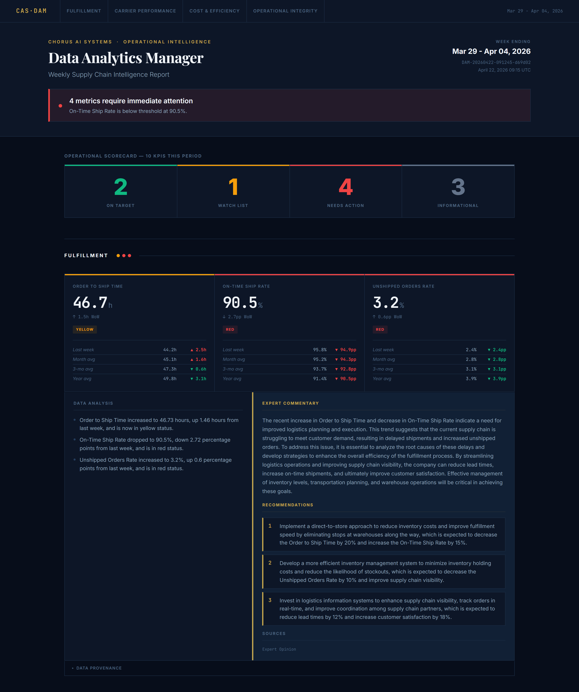
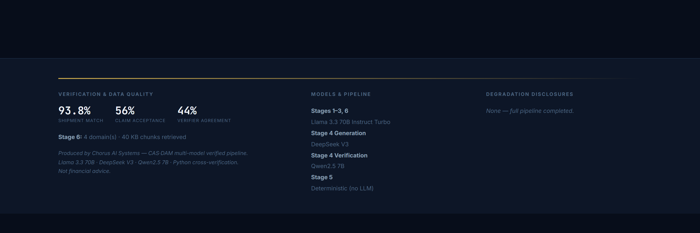
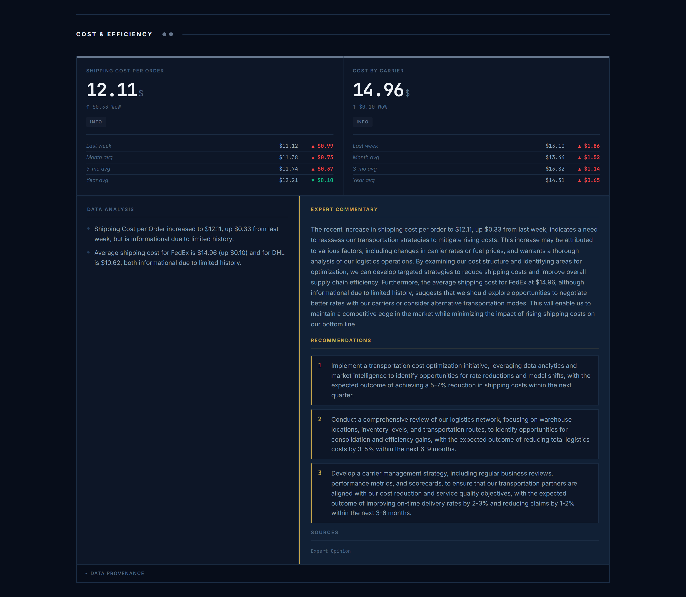

CASDAM ingests operational data from multiple sources, computes every KPI independently in Python, and verifies each AI-generated claim against source-bound facts before it reaches the report. When confidence breaks, the system narrows scope or halts — and discloses every exception.
Also: Earnings Call Dossier, a second implementation of the Chorus AI framework
The promise of production AI is powerful. The reality is that most AI pipelines, even well-designed ones, suffer from three failure modes that are invisible until they're not.
The model that generates also evaluates. Shared architecture means shared blind spots. A verifier trained on the same data distribution as the generator will miss the same classes of errors the generator makes.
Solution requires structural separation of generation and verification with independent model families. Not more prompting of the same model: different architecture, different training, different blind spots.
Single-loop feedback corrects individual outputs but cannot detect configuration failures. When the first feedback loop keeps failing, there is no second mechanism to notice that the first loop is broken.
Solution requires a secondary feedback loop (Layer 5 in the Chorus AI framework) that monitors the governance layer itself, not just individual outputs. The orchestrator must be observable, not just the agents.
Ashby's Law of Requisite Variety violated. Governance capacity must scale proportionally with operational complexity. Every new agent introduced to a system requires a corresponding increase in verification, coordination, and audit mechanisms.
A pipeline with five agents and governance designed for two is not safer than a two-agent pipeline. It is less safe. The governance gap grows with every addition.
These are not model failures. They are architecture failures.
Every week, a data analyst downloads CSVs from Shopify, FedEx, DHL, and a 3PL provider, reconciles them manually, computes 10 KPIs in Excel, and writes a summary for leadership. DAM automates this entire workflow using governed LLM agents at every stage where the analyst would normally apply judgment.
Human judgment replaced: Opening an unfamiliar CSV and deciding which column maps to which field. A skilled analyst spends 15–30 minutes per data source applying domain knowledge to ambiguous column names and inconsistent date formats.
Python validates every proposed field mapping. Duplicate order_id values trigger an immediate halt. The LLM cannot override a structural data integrity failure by expressing narrative confidence.
Ambiguous mappings are disclosed in FieldMappingLog, not silently resolved. LLM mapping failure after one retry produces a DegradationSignal halt. The pipeline stops rather than continuing on corrupted data.
Human judgment replaced: Running VLOOKUPs, then manually investigating the rows that don't match. An analyst applies business knowledge to decide whether a non-matching record is a data error, a legitimate exception, or a carrier reporting discrepancy.
Fuzzy match confidence threshold of 0.90 enforced by Python. The LLM cannot override this threshold by expressing narrative confidence: "I believe these records match" is not a valid override of a 0.74 confidence score.
Match rate < 80% → halt. 80–95% → warning disclosed in report. Every unmatched record appears with join_status='unmatched' in the output. Nothing is silently dropped.
Human judgment replaced: Writing formulas in Excel, applying threshold rules, deciding what is Green vs. Yellow vs. Red. An analyst knows which metrics matter most and applies contextual judgment to borderline cases.
Python independently recomputes every KPI. Python always wins. LLM/Python mismatches are logged and tracked by Layer 5 for drift detection. The LLM value is informational only. It never reaches the FactList.
Stage halts only if Python itself cannot compute a KPI, meaning a genuine data failure occurred. LLM errors are corrected silently by Python, logged for drift tracking, and disclosed in the verification footer.
Human judgment replaced: Writing the narrative: what does this week's data mean? What should leadership do? An analyst synthesises numbers into actionable language and applies industry knowledge to recommend responses.
Every claim must cite a FACT_ID. Qwen2.5 independently checks each citation: does the cited fact actually support this claim? Claims that fail verification are stripped entirely, not marked uncertain.
< 3 verified claims → partial DegradationSignal. 0 claims → Level 2 halt. Cross-verifier agreement at 100% for 3 consecutive runs triggers a Layer 5 critical alert, not a success signal.
Human judgment replaced: Formatting the report, copying numbers into a template, sending it to leadership. Consistency, completeness, and delivery.
Structural completeness check against required sections list. Missing section → halt. PDF page count deviation → warning logged. Every degradation disclosure from Stages 1–4 is surfaced in the verification footer.
Stage 5 being a viable system without an LLM demonstrates that viability is a property of governance structure, not AI presence. The most reliable stage in the pipeline is the one with no model at all.
Every KPI gets a unique FACT_ID. Every insight must cite one. Every citation is verified before the insight surfaces. The FactList is immutable after Stage 3. No downstream stage can add, modify, or remove entries.
The governance problems facing modern AI systems were studied rigorously in the 1970s: how to control a complex, probabilistic, multi-agent system under uncertainty. The insights are directly applicable.
"Viability is a property of structure, not capability. Any system that wants to survive in a changing environment needs five control layers, and they must be intact simultaneously."
"Only variety can absorb variety. Your governance architecture must be at least as varied as the ways your system can fail. If it is not, failures will find the gaps, not occasionally but inevitably."
"Every observer is part of the system being observed. An LLM verifier that uses an LLM to check an LLM is not an external authority. It is another probabilistic system embedded in the same architecture."
Every Chorus AI system must contain all seven governance layers. A system missing any layer has a structurally predictable failure mode. This is not a checklist. It is a viability condition.
Six distinct model families, one per data-shaping role: Mistral Small 3.2 24B (mapping), Gemini 2.5 Flash (reconciliation), Claude Haiku 4.5 (KPI cross-check), DeepSeek V3 (generation), Qwen2.5 7B (verification), Llama 3.3 70B (advisor). All routed through a single OpenRouter client. Each agent operates with bounded scope, defined input/output schemas, and no authority to make governance decisions. Agents do not know the pipeline exists. They receive input and produce output.
Pydantic schemas enforce typed contracts between every stage. An asyncio orchestrator sequences execution and enforces stage ordering. Stage inputs and outputs are validated at every boundary. Malformed data cannot propagate.
Internal gate in each stage MVS. Python independently recomputes every KPI value; the LLM estimate is compared against the Python value and discrepancies are logged. LLM/Python mismatches do not halt the pipeline; Python always wins. Explicit halt conditions defined for every stage.
Qwen2.5 independently verifies every Stage 4 insight citation against the FactList. Cross-verifier agreement tracked run-over-run. Adversarial test suite run monthly. The verifier is structurally independent of the generator: different model family, different training data.
Layer5Monitor reads the N most recent run logs. Emits structured alerts on rising retry rates, low claim acceptance rates, and verifier agreement lock (100% agreement for 3+ consecutive runs). Bounded authority: the monitor recommends but does not act. Humans act on its signals.
Inviolable constraints: no unverified output is ever released. The FactList is immutable after Stage 3. Stage 4 refuses input where python_verified=False. No financial projections under any code path. These are structural constraints. They cannot be overridden by optimization pressure or LLM instruction.
Input validation before any LLM call. Malformed CSVs are rejected with disclosure, not silently handled. Output governance: required report sections are checked before PDF release. HealthTelemetry exposed upward to the orchestrator from every stage.
Thirteen principles govern every system built on the Chorus AI framework. Each is derived from Beer, Ashby, or Von Foerster. Full principles in Section 9.
The defining architectural insight of CASDAM is not that it uses multiple agents. It is that each agent is a viable system: self-governing, with its own operational layer, its own verification, and its own degradation logic. The orchestrator coordinates. It does not govern stage internals.
Click any tier to explore its role.
Select a tier
Every Chorus AI system has three self-governing tiers. Each has distinct authority, scope, and failure modes. None is optional.
| Conventional Multi-Agent AI | The CASDAM Pattern |
|---|---|
| Agent calls agent | Stage exposes a governed interface to the orchestrator |
| Orchestrator directs agent behavior | Orchestrator coordinates; each stage self-governs internally |
| Failure in one agent breaks the chain | Stage failure produces a structured DegradationSignal; pipeline continues with degradation disclosed |
| No standard for what an agent returns | Every stage returns VerifiedOutput or DegradationSignal, a typed contract |
| Governance is bolted on after the fact | Governance is the structure of each stage, not a wrapper around it |
A mid-level data analyst performing this work costs $310–$450 per week. CASDAM performs the same work in 2 minutes at $0.05 per run.
With full traceability and governance that manual analysis never provides.
The same work a data analyst performs in 2 hours costs under five cents, with full governance and traceability.
Costs reflect OpenRouter pay-per-token pricing on synthetic test data. Production deployment costs will vary.
Ratio of actual API costs to published mid-level analyst labor rates ($310–$450/week). A model comparison, not a live production ROI claim.
Six structurally distinct model families — one per data-shaping role — prevent shared blind spots in both generation and verification.
Below 70% triggers a Layer 5 warning. 100% for 3 consecutive runs triggers a critical alert. Agreement lock means shared blind spot, not perfect quality.
Tracked every run and trended. Rising mismatch count indicates model drift or prompt degradation. Python always wins. The LLM value is logged for drift tracking only.
Expected to be high but not 100%. Three consecutive runs at 100% triggers the adversarial test suite immediately. Persistent perfect agreement is a red flag.
Above 20% triggers a Layer 5 warning. The shared fallback (Llama 3.3 70B via OpenRouter) is intentionally from a different family than every primary stage, so that a retry never compounds the same failure mode that caused the primary to fail.
Most AI demos show impressive outputs. This section shows the governance of an impressive output. The verification footer is as prominent as the KPI table.



The system does not silently handle data integrity failures. It stops, explains why, and discloses the exception in the report.
These are the structural principles behind every decision in the Chorus AI framework, derived from Beer, Ashby, and Von Foerster. A system that violates any principle has a predictable failure mode.
Generation and validation are structurally separated in DAM. DeepSeek V3 generates insights; Qwen2.5 verifies them. These are different companies, different architectures, different training data. The verifier has no information about what the generator might have said. It evaluates the claim against the FactList independently.
This is the single most important principle in the framework. Every other governance mechanism builds on the assumption that the entity checking the output is not the entity that produced it.
Every stage boundary in DAM is a gate, a recorded decision point. The gate checks a defined condition and produces a logged result. Passing a gate is not implicit; it is explicit. If a stage output cannot pass its gate, the pipeline halts or degrades. There is no silent continuation on bad data.
Agents in DAM are not general-purpose assistants. They receive a specific structured input and are expected to produce a specific structured output. They cannot request additional information, modify their instructions, or escalate to a higher authority. Their scope is entirely defined by their input schema. A Stage 1 agent cannot decide to also perform Stage 3 work because it thinks that would be helpful.
The FactList implements this principle mechanically. Every insight in the final report cites a FACT_ID. Every FACT_ID traces to a Python-computed KPI value. Every Python value traces to specific source data rows. You can follow the chain from any sentence in the report back to the CSV row that generated it. This is not documentation. It is structure.
Every stage in DAM emits a HealthTelemetry object: latency, retry count, cost, match rates, mismatch counts, claim acceptance rates. This telemetry flows upward to the orchestrator and is persisted in the run log. Layer 5 operates on this data. A stage that produces correct outputs but emits no telemetry is ungovernable. Its health cannot be assessed over time.
DAM has five defined degradation levels. Level 1 is partial output with disclosure. Level 2 halts the affected stage but continues others. Full halt is reserved for data integrity failures (duplicate IDs, match rate collapse). The goal is never false confidence. A partial report that says "Stage 2 match rate was 82%, warning: 18% of shipments unmatched" is more trustworthy than a complete report that silently filled in the gaps.
Independence has two components in DAM: model independence (Qwen verifies DeepSeek: different company, architecture, and training) and computational independence (Python recomputes KPIs without using the LLM value). The Python verification of KPIs is the stronger form: it introduces a fundamentally different computational substrate, not just a different probabilistic model.
Layer 5 exists because static systems degrade. The Layer5Monitor tracks trends across runs, not just whether the current run passed its gates, but whether passing rates are declining, retry rates are rising, or agreement patterns are locking. These are early signals of model drift or configuration degradation that would not be visible from a single-run perspective.
Constitutional constraints in DAM are not configuration. They are code paths that do not exist. There is no code path in Stage 4 that releases an unverified claim. There is no code path that adds entries to the FactList after Stage 3 completes. There is no code path that produces financial projections. These constraints cannot be "turned off" via prompt or parameter. They are structural absences.
Operational reliability (the system runs without crashing) is insufficient. Epistemic trustworthiness (the outputs can be trusted) is also required. A system that produces outputs reliably but cannot verify them is operationally viable but epistemically untrustworthy. DAM requires both: it must complete and its completions must be independently verifiable.
Ashby's Law applied directly. Adding Stage 6 to DAM required adding corresponding governance: the citation check for RAG outputs, the domain-level acceptance threshold, the knowledge base availability check. The stage could not be added without its governance layer. Doing so would have reduced overall system trustworthiness even while increasing capability.
Ross Ashby's concept of ultrastability: a system with two nested feedback loops is more stable than one with a single loop. The first loop (runtime governance) corrects individual outputs. The second loop (Layer 5 / Layer5Monitor) corrects the system configuration when the first loop keeps activating. A system where the retry rate keeps rising needs configuration intervention, not more retries.
Von Foerster's second-order cybernetics applied to verification. If DeepSeek and Qwen agree on 100% of claims for three consecutive runs, the naive reading is "quality is perfect." The Chorus AI reading is: "these two models may have converged on a shared blind spot." The cross-verifier agreement tracker exists to flag this pattern. High agreement is expected; perfect agreement is suspicious.
Any analytical workflow that currently relies on human judgment applied to structured data, where that judgment needs to be reliable, auditable, and scalable, is a candidate for the Chorus AI Systems framework. DAM is the first implementation. The Earnings Call Dossier is the second.
Transforms earnings call transcripts into verified analytical briefs for retail investors. Multi-agent pipeline with FactList traceability chain, Gate 2 fact verification, and Holistic Verifier. Every claim cites a specific moment in the transcript.
15 years building production systems across ecommerce, supply chain, and risk operations: scaling Bonobos from $10M to $100M, designing fraud detection infrastructure protecting $2B+ in annual transactions at Etsy, deploying predictive fulfillment analytics at Bodily. Chorus AI Systems is my independent AI research and development practice, where CASDAM and the Earnings Call Dossier were designed and built. I'm currently seeking an AI Architect role where the work is designing governed, production-grade AI systems, not demos.
If you're building production AI systems and want architecture that earns trust rather than assumes it. Let's talk.